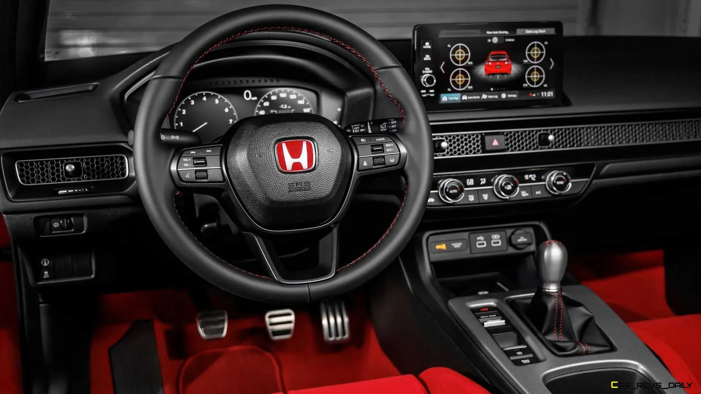
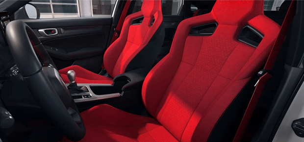
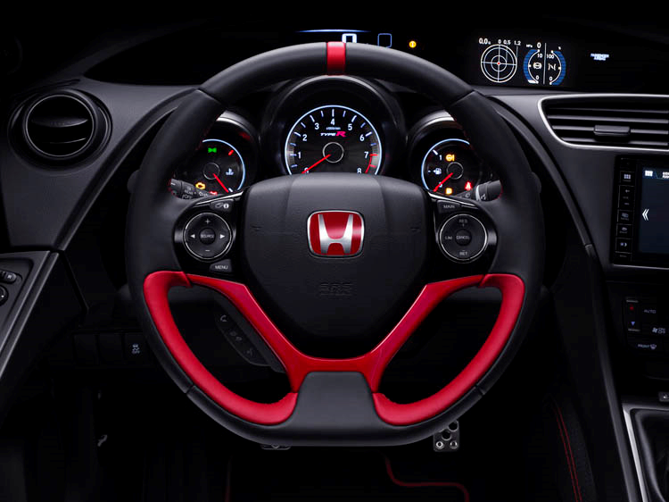

Interior, Comfort, and Cargo
Although the Civic Type R wears a minimalist interior design (at least compared to the previous-generation CTR), it has no shortage of racy visual cues. The latter includes red accents, faux carbon-fiber trim, and a familiar set of super comfy, highly supportive front seats. Just mind the ambient temperature before searing your palm on the aluminum shift knob. Atop the new digital cluster is a row of shift light indicators to help prevent slapping up against the redline between shifts. Passenger and cargo space are the same as the normal Civic hatchback, which should make the Civic Type R a great dual-purpose car.


